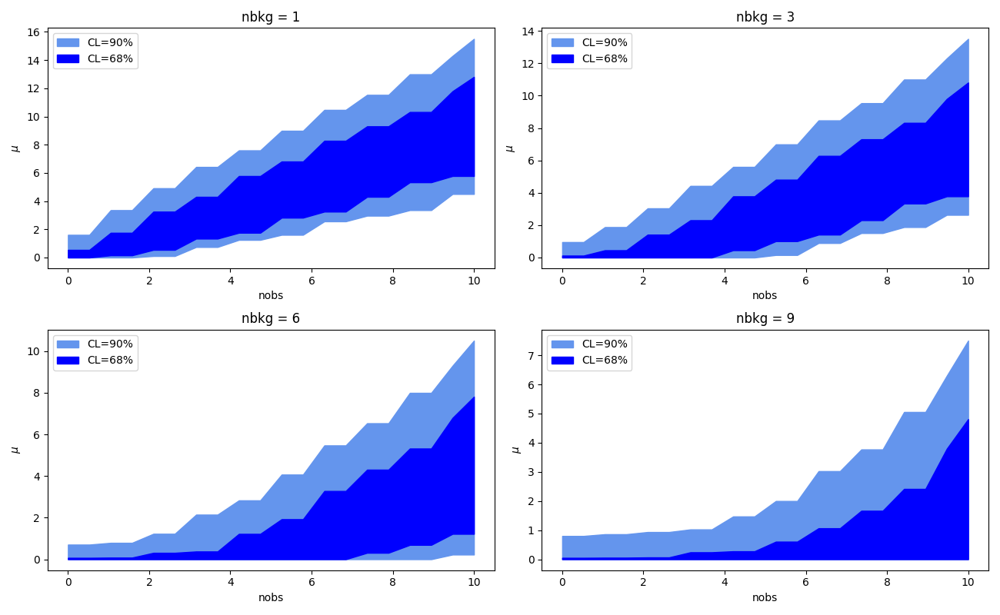

Confidence Intervals#
Author: Jose A. Hernando, X. Cid Vidal, February 2026
Instituto Galego de Altas Enerxías. Universidade de Santiago de Compostela, Spain.

import time
print( ' Last Execution ', time.asctime())
Last Execution Tue Feb 3 13:38:56 2026
# general imports
%matplotlib inline
%reload_ext autoreload
%autoreload 2
# numpy and matplotlib
import numpy as np
import pandas as pd
import matplotlib
import matplotlib.pyplot as plt
import scipy.stats as stats
# possible styles: ggplot (simplicity), bmh (scientify data),
plt.style.context('seaborn-colorblind')
import htcore as htcore
import httoys as httoys
import htcint as htcint
import htcint_examples as htexam
# ploting images
from IPython.display import display, Image
Introduction#
We usually indicate that a given parameter \(\mu\) (i.e branching ratio) has an upper limit at 90 or 95% CL (e.g. \(\mathcal{B}(B^0\to\mu\mu)\) < \(2.6 \times 10^{-10}\) at 95 % CL, by LHCb).
Sometimes we quote an interval for the parameter \(\mu\) as a confidence interval (CI) with a confidence level (CL) range.
But what does it mean?
It means a very different thing for a frequentist and a bayesian!
And… how are they computed?
Frequestist vs Bayesians#
Frequentists talk about experiments in the same conditions. Bayesians talk about probabilities based on a prior knowledge or a ‘reasonable’ guess.
Frequentists say a CI covers the true value at a given \(\beta\) CL. That means that if you repeat a large number of times, \(m\), an experiment, and for each one you set a CI \(\{\mathrm{CI}_i, \, i=1, \dots, m \}\), at least a fraction \(\beta\) of the CIs cover the true value.
A frequentist needs to provide a method to construct the CI. The method should provide the correct coverage.
Bayesians talk about credible intervals (CI), which means that the probability that the true parameter is inside the CI is greater or equal to some \(\beta\) value.
That sounds mostly like what you want, but unfortunately to get it, you need to accept some assumptions or some ‘reasonable’ priors.
For a frequentist a CI indicates the limit in which the data instance \(x\) is considered an extreme event with respect to the parameter \(\mu\) at a given \(\beta\) CL.
But to indicate if \(x\) is an extreme event, we need to order data as extreme with respect to a given \(\mu\) value.
In the following cells, we will use a counting experiment as an example.
In a counting experiment, you expect some known background, e.g., \(b= 3\) events in a kinematical window (for example in a range or energy or a band in an invariant mass), and an unknown signal with strength \(\mu >= 0\).
Classical frequentist CI#
Given \(x\) data that is related to a theoretical, unknown, parameter \(\mu\) via a pdf, \(g(x | \mu)\), (e.g., \(x\) is poisson distributed with mean \(\mu\)), how can we provide a frequentist CI for \(\mu\) given \(x\)?
Classical CIs are obtained using the Neyman construction.
Current or modern CIs are obtained using Feldman-Cousins construction.
The Neyman construction defines a confidence belt in the plane \((x, \mu)\).
First, for a given \(\mu\) and the pdf, \(g(x | \mu)\), we define an interval \([x_l(\mu), x_u(\mu)]\) where at least \(\beta\) of the possible \(x\) values are contained inside. We will describe later how this interval is constructed.
The union of the intervals \([x_l(\mu), x_u(\mu)]\) as a function of \(\mu\) defines a confidence region, a belt; in the plane \((x, \mu)\).
There are three different ways to define the interval \([x_l(\mu), x_u(\mu)]\) for given \(\mu\).
Lower, central and upper limit intervals.
The lower interval:
For the upper:
And the central:
Notice that frequentists are conservative and \(\beta\) CL implies at least \(\beta\) CL.
In the next cells we compute the central, lower and upper interval for a given value of \(b = 3\) and \(\mu = 0.5\) of a poisson distribution.
b, mu = 3., 0.5
beta = 0.90
alpha = (1- beta)/2.
ns = np.arange(12)
ps = stats.poisson.pmf(ns, b + mu)
plt.bar(ns, ps, color = 'orange', hatch='\\', alpha = 0.5);
i0 = int(stats.poisson.ppf(alpha , b + mu))
i1 = int(stats.poisson.ppf(1-alpha, b + mu)) + 1
plt.bar(ns[i0:i1], ps[i0:i1], color = 'green', hatch='//', alpha = 0.5, label = 'central CL');
plt.xlabel('x'); plt.title('b + s = '+str(b)+' + '+str(mu)); plt.legend();
print('interval (', i0, ',', i1-1, ')')
print('coverage ', 100 * np.sum(ps[i0:i1]), '%')
interval ( 1 , 7 )
coverage 94.30636944863619 %
b, mu = 3., 0.5
beta = 0.90
ns = np.arange(12)
ps = stats.poisson.pmf(ns, b + mu)
i0 = int(stats.poisson.ppf(beta , b + mu)) + 1
plt.bar(ns , ps , color = 'orange', hatch='//', alpha = 0.5);
plt.bar(ns[:i0], ps[:i0], color = 'green' , hatch='\\', alpha = 0.5, label = 'upper');
plt.xlabel('x'); plt.title('b + s = '+str(b)+' + '+str(mu)); plt.legend();
print('interval ( - ,', i0 - 1, ')')
print('coverage ', 100 * np.sum(ps[:i0]), '%')
interval ( - , 6 )
coverage 93.47119029710466 %
b, mu = 3., 0.5
beta = 0.90
ns = np.arange(12)
ps = stats.poisson.pmf(ns, b + mu)
i0 = int(stats.poisson.ppf(1 - beta , b + mu))
plt.bar(ns , ps , color = 'orange', hatch='//', alpha = 0.5);
plt.bar(ns[i0:], ps[i0:], color = 'green' , hatch='\\', alpha = 0.5, label = 'lower');
plt.xlabel('x'); plt.title('b + s = '+str(b)+' + '+str(mu)); plt.legend();
print('interval (', i0 , ' , - )')
print('coverage ', 100 * np.sum(ps[i0:]), '%')
interval ( 1 , - )
coverage 96.95136243577515 %
Class exercise: Consider a poisson distribution with \(b=3\) background events and a value of possible signal, \(\mu=4\). Give the 90% lower, upper and central interval.
| We define the confidence belt scanning along the $\mu$ values and, for each one, knowing the pdf $g(x | \mu)$, computing the interval $[x_l(\mu), x_u(\mu)]$ that provides a $\beta$ % containment. |
from IPython.display import Image, display
display(Image('figs/CI_belt.png', width=500))
In case we measure \(x_0 = 3.2\), the CI is given by the values of \(\mu\) where the vertical line \(x_0 = 3.2\) meets the boundaries of the confidence belt.
Example: Construct the confidence belt CI at 90% and 68% CL considering a counting experiment with background \(b\) and unknown signal \(\mu\).
In case the pdf is a poisson with mean \(b + \mu\). We scan along \(\mu\) and for each \(\mu\) we obtain the interval \([x_l(\mu), x_u(\mu)]\) using the central interval at some confidence level (e.g. 90%).
Then we unify the border of the segments and we define the confident belt.
Which are the \(\mu\) CI, for \(b=3\) and \(x_0 = 10\)?
def plt_confbelt(x0, b, beta1 = 0.90, beta2 = 0.68,beta3=0, btype = 'classical',
mumax = 12, musize=200):
""" draws the CI confident belt for beta1 and beta2 CL of type = ('classical', 'fc')
draws a line in the confident belt plane for x0 and print the ci for beta1 and beta2
beta1 = 90 %CL and beta2 = 68% CL
"""
mus = np.linspace(0., mumax, musize)
print("number of mus scanned =",len(mus))
if beta3:
xls, xus, ci1 = htcint.ci_belt(mus, b, beta3, type = btype)
plt.fill_betweenx(mus, xls, xus, color = 'darkblue', alpha = 0.5,
label = str(int(100*beta3))+'% CL');
xls, xus, ci1 = htcint.ci_belt(mus, b, beta1, type = btype)
plt.fill_betweenx(mus, xls, xus, color = 'blue', alpha = 0.5,
label = str(int(100*beta1))+'% CL');
xls, xus, ci2 = htcint.ci_belt(mus, b, beta2, type = type)
plt.fill_betweenx(mus, xls, xus, color = 'cyan', alpha = 0.5,
label = str(int(100*beta2))+'% CL' );
plt.plot((x0 + 0.1 , x0 + 0.1), (0, mumax), color = 'black', ls = '--')
plt.xlabel('$x$'); plt.ylabel('$\mu$'); plt.title(type); plt.grid(); plt.legend()
print('CI ', ci1(x0), ' at ', beta1, 'CL for b = ', b, ' and x0 = ', x0)
print('CI ', ci2(x0), ' at ', beta2, 'CL for b = ', b, ' and x0 = ', x0)
return ci1, ci2
x0, b = 10, 3
plt_confbelt(x0, b, btype = 'classical', mumax = 12, musize = 2000);
number of mus scanned = 2000
CI (np.float64(2.431215607803902), np.float64(12.0)) at 0.9 CL for b = 3 and x0 = 10
CI (np.float64(3.907953976988494), np.float64(11.243621810905452)) at 0.68 CL for b = 3 and x0 = 10
Exercise: Use the classical construction of CI for the case of a gaussian with sigma 1 and \(\beta = 68\) % CL.
Feldman-Cousins (FC) CI#
Feldman and Cousins, when working in the 90’s on the NOMAD experiment, found several worrisome issues with classical CIs.
And they proposed an ordering principle to compute the extreme data, \(x\), with respect to \(\mu\), based on the likelihood ratio.
This ordering principle avoids the decision of lower, central and upper intervals. It passes smoothly from one to another.
Now is the new classical.

Gary Feldman

Robert Cousins
Historically, Feldman and Cousins encountered:
First, one has the temptation of quoting a flip-flop result: if we do not observe a signal, we quote a 90% CL lower interval, if we get an observation, we quote a 90% central CI. That is… you present your result depending on your actual observation. Sounds bad! Biased result
In this example, data, \(x\), follows a normal gaussian. At Z=3, the confidence belt passes from 90 % CL lower limit to 90% CL central limit. The belt has not the proper frequentist coverage.

We should decide what type of interval to quote before doing the measurement!
x0, b = 0, 3
plt_confbelt(x0, b, beta3=0.99,btype = 'classical', mumax = 12, musize = 2000);
number of mus scanned = 2000
CI None at 0.9 CL for b = 3 and x0 = 0
CI None at 0.68 CL for b = 3 and x0 = 0
Second, there is no CI at 90% CL for the case \(b=3\) and \(x_0= 0\). (See the previous example) Imagine that NOMAD, expecting 3 background events, saw no signal, and had no result to quote!
It was unacceptable: This was a posible result of the NOMAD experiment: having no result!
FC proposed a construction interval method (Feldman-Cousins method) that smoothly passes from lower to central intervals and avoids the problem of the no CI observed at \(b=3, x_0 = 0\).
Exercise: Verify that the flip-flop problem has not the proper coverage. For this, set the flip-flop construction and test the coverture for \(\mu_{true} = 3\). Why does the case \(b=3\) and \(x_0 = 0\) have no classical CI at 90% CL?
FC proposed an ordering rule, a variable that quantifies how extreme data \(x\) is with respect to \(\mu\).
The variable is the likelihood ratio with respect to the best-estimate \(\hat{\mu}(x)\).
The best-estimate \(\hat{\mu}(x)\) is the value of \(\mu\) that maximizes the likelihood \(\mathcal{L}(x| \hat{\mu}(x))\) for a given measurement \(x\).
The values of \(t_\mu\)(x) vary between \([0, 1]\).
The \(x\) measurements with \(t_\mu(x)\) values approaching 1 are “likely” with respect to \(\mu\). Those with values close to 0 are “unlikely”.
The lower the \(t_\mu(x)\) value the more extreme a \(x\) measurement is.
For example, for a given \(\mu\) and \(x\), if the best estimate \(\hat{\mu}(x)\) is close to \(\mu\), both likelihoods are similar and the ratio, \(t_\mu(x)\), is close to 1.
Nevertheless, a given \(x\) may have a small likelihood, \(\mathcal{L}(x | \mu)\), but the maximum likelihood for that \(x\), \(\mathcal{L}(x | \hat{\mu}(x))\) may also be small, then \(t_\mu(x)\) is close to 1, and \(x\) can gain priority with respect to other \(x\)’s values for the same \(\mu\).
That is the case for \(x = 0\) for \(b = 3\). The problematic case discussed above which could cause having no result in the classical construction.
Example: Consider the case of \(b=3\) and \(\mu = 0.5\) and construct the FC segment, \([x_l(\mu), x_u(\mu)]\) along \(x\) at 90% CL.
For each \(n\), that has probability \(g(n | b + \mu)\), with \(b=3, \, \mu = 0.5\), we estimate \(\hat{\mu}(n)\).
The best estimate \(\hat{\mu}(n)\) is \(n-b\), i.e., the value the maximizes \(g(n | b+ \hat{\mu} = n)\).
Except for \(n\le 3\), where it is \(0\), as there is no physical meaning of a negative signal.
For each \(n\) we compute the likelihood ratio \(t_\mu(n)\).
In this case:
Then we order the \(n\) according to \(t_\mu(n)\) from highest to lowest (in this case).
For each value \(n\), we need to compute the probability \(g(n | b + \mu)\) and \(g(n | b + \hat{\mu})\)
We accept \(n\) values in the CI according to the \(t_\mu\) order and considering its probability \(g(n | b + \mu)\) till we reach or surpass 90% probability.
Inspect the code in the next cells
b, mu = 3, 0.5
ns = np.arange(12)
muhats = np.asarray([max(0, ni - b) for ni in ns])
def tmu(ni, muhat, b = b, mu = mu):
return stats.poisson.pmf(ni, b + mu) / stats.poisson.pmf(ni, b + muhat)
gmus = np.asarray([stats.poisson.pmf( ni, b + mu) for ni in ns])
gmuhats = np.asarray([stats.poisson.pmf( ni, b + muh) for ni, muh in zip(ns, muhats)])
tmus = np.asarray([tmu(ni, muhati) for ni, muhati in zip(ns, muhats)])
dic = {'n (x)' : ns, 'muhat(x)' : muhats,
'g(n | b + muhat)' : gmuhats, 'g(n| b+ mu)': gmus, 'tmu(n)': tmus, 'qmu ': -2 * np.log(tmus) }
df = pd.DataFrame(dic)
The next table shows the values of \(g(n | b+ \mu), \, \hat{\mu}(x), \, g(n | b + \hat{\mu}(n)), \, t_\mu(x), q_\mu (x) = -2 \mathrm{ln}(t_\mu(x))\) for the possible measurements \(n\) in a single counting experiment with \(b = 3\) and \(\mu = 0.5\).
df
| n (x) | muhat(x) | g(n | b + muhat) | g(n| b+ mu) | tmu(n) | qmu | |
|---|---|---|---|---|---|---|
| 0 | 0 | 0 | 0.049787 | 0.030197 | 0.606531 | 1.000000 |
| 1 | 1 | 0 | 0.149361 | 0.105691 | 0.707619 | 0.691699 |
| 2 | 2 | 0 | 0.224042 | 0.184959 | 0.825556 | 0.383397 |
| 3 | 3 | 0 | 0.224042 | 0.215785 | 0.963148 | 0.075096 |
| 4 | 4 | 1 | 0.195367 | 0.188812 | 0.966450 | 0.068251 |
| 5 | 5 | 2 | 0.175467 | 0.132169 | 0.753237 | 0.566749 |
| 6 | 6 | 3 | 0.160623 | 0.077098 | 0.479995 | 1.467958 |
| 7 | 7 | 4 | 0.149003 | 0.038549 | 0.258714 | 2.704061 |
| 8 | 8 | 5 | 0.139587 | 0.016865 | 0.120823 | 4.226857 |
| 9 | 9 | 6 | 0.131756 | 0.006559 | 0.049779 | 6.000309 |
| 10 | 10 | 7 | 0.125110 | 0.002296 | 0.018348 | 7.996442 |
| 11 | 11 | 8 | 0.119378 | 0.000730 | 0.006118 | 10.192911 |
In the next cell we plot \(g(n | b + s)\) and \(t_\mu(x)\) for n-values given \(b = 3\) and \(\mu = 0.5\)
plt.bar(ns, gmus, alpha = 0.5, label = '$g(x | b + \mu)$');
plt.bar(ns, tmus, alpha = 0.5, label = '$t_\mu(x)$');
plt.xlabel('$x$'); plt.legend();
def plt_rmu_fc(mu, b, beta = 0.9):
rmu, fout = htcint.rmu(mu, b, beta, type = 'fc', full_output = True)
print('Rmu segment for b ', b, 'and mu ', mu, ' = ', rmu);
tms, cps, ns = [ifout[0] for ifout in fout], [ifout[1] for ifout in fout], [ifout[2] for ifout in fout]
#tms = [-2*np.log(tmi) for tmi in tms]
ps = [cps[0]]; ps = ps + [cps[i]-cps[i-1] for i in range(1, len(ns))]
ks = range(len(ns))
ax = plt.gca()
axb = ax.twinx()
ax.bar (ks[:15], ps[:15], label = '$g(x | b + \mu)$', alpha = 0.5, color = 'green');
ax.plot(ks[:15], cps[:15], marker = 'o', color = 'green',
label = 'cdf(x| b + $\mu$)', alpha = 0.5);
axb.bar(ks[:15], tms[:15], label = '$t_{\mu}(x)$', alpha = 0.5, color = 'orange');
ax.plot((0, 15), (beta, beta), color = 'black', ls = '--');
ax.set_xlabel(r'$x$'); ax.set_ylabel('probabilty'); axb.set_ylabel(r'$t_\mu$')
plt.xticks(ks[:15], labels = ns[:15])
plt.title('b = '+str(b)+', $\mu$ = '+str(mu)); plt.grid()
ax.legend(loc = 1); axb.legend(loc = 4)
return
In the next cell we plot in order of better \(t_\mu(n)\), with its corresponding \(g(n | b+\mu), \; t_\mu(n)\) and the cumulative function, \(\mathrm{cdf}(n | b+\mu)\).
The interval \([n_l(\mu), n_u(\mu)]\) is defined by the range of \(n\) values till the cdf surpassses a given \(\beta\) containment (the dashed line in the plot).
For this case \(b = 3, \, \mu = 0.5, \; \beta = 90\) %.
mu, b, beta = 0.5, 3., 0.90
plt_rmu_fc(mu, b, beta);
Rmu segment for b 3.0 and mu 0.5 = (np.int64(0), np.int64(6))
The computation of the actual confidence belt (code taken from _rmu_fc in htcint). Take relevant ts,ps and ns. Sort them according to ts
zs = list(zip(ts, ps, ns))
zs.sort()
zs.reverse()
ts = np.array([zi[0] for zi in zs])
ps = np.array([zi[1] for zi in zs])
ns = np.array([zi[-1] for zi in zs])
Compute the cumulative probability, get the threshold:
cps = np.array([sum(ps[:i+1]) for i in range(ndim)])
sel = (cps < beta)
xbeta = min(cps[~sel])
The belt is given by the maximum and minimum ns within the relevant range:
sel = (cps <= xbeta)
iu, il = min(ns[sel]), max(ns[sel])
The next cell shows the confidence belt using the FC ordering for the case of a single counting experiment with \(b = 3\) at 68% and 90% containment.
Explore and obtain the confidence interval for different measurements, for example the problematic one \(x = 0\) that we studied with the classical construction.
x0, b = 0, 3
plt_confbelt(x0, b, btype = 'fc',musize=2000);
number of mus scanned = 2000
CI (np.float64(0.0), np.float64(0.9484742371185593)) at 0.9 CL for b = 3 and x0 = 0
CI None at 0.68 CL for b = 3 and x0 = 0
Feldman-Cousins can be calculated in ROOT
import ROOT
CL = 0.9
fc = ROOT.TFeldmanCousins(CL); print(fc.CalculateLowerLimit(0,7),fc.CalculateUpperLimit(0,7))
This is an example of what you get:
{kind=link}
Exercise: FC is a frequentist method. Verify now that the FC construction guarantees coverage for some examples \(b = 3, \mu_{true} = 0.5\).
Exercise: Compare the classical and frequentist intervals, where do they differ? where are they equal? Use as example the case \(b=3\).
FC confidence intervals in n-dimensions#
The classical ordering is hard to extend to n-dimensions. But FC is not.
We redefine the variable:
In this case, if \(x\) gives \(\hat{\mu}(x) \simeq \mu\), \(t_\mu \sim 0\), while if \(\hat{\mu}(x)\) is different from \(\mu\), \(t_\mu\) is large.
The larger \(t_\mu(x)\) the more extreme is \(x\) with respect to \(\mu\).
The pdf, \(g(t_\mu | \mu)\), allows us to set the most \(1-\beta\) extreme \(x\) data for a given \(\mu\).
There is no lower, central or upper integral. The ordering sets a unique interval
In this case \(\mu\) is a vector. We scan a region of the vector space. For each point in that space we will compute the \(t_\mu(x)\) pdf, \(g(t_\mu | \mu)\), and the p-value of the observed data \(x_0\). We will select the region of \(\mu\), as the confidence region, whose p-values are inside the \(\beta\) CL.
Example: Compute the distribution of \(t_\mu(x)\) when \(b=3\) and \(s=0.5\) and the \(t_\mu\) value for the observed data \(x_0 = 0\)
This is how the computation works, from plt_tmus in htcint_examples. First we compute the \(t_\mu(x_0)\) and \(t_\mu\) (from pseudo-experiments).
ht = htcore.htcomposite(rv, mu)
tmu0 = ht.tmu(x0, mu, mu0)
xs = rv.rvs(mu, size = size)
tmus = [ht.tmu(xi, mu, mu0) for xi in xs]
We then get the relevant p-value and confidence intervals
print('p-value t0 :', np.sum(tmus >= tmu0)/(1.*size))
xl, xu = np.min(xs[tmus <= tmu0]), np.max(xs[tmus <= tmu0])
b, mu, x0, size = 3, 0.5, 0, 10000
htexam.plt_tmus(x0, stats.poisson, b + mu, b, size);
p-value t0 : 0.1726
(xl, xu) with tmu <= tmu0 : ( 0 , 5 )
Bayesian Credible Intervals#
Bayesians provide a credible integral at a \(\beta\) CL. The probability to find the true value inside the CI is \(\beta\).
To obtain the CI, bayesians need the pdf \(g(x | \mu)\), and the prior probability of the relevant parameter, \(\pi(\mu)\).
In most cases, this prior is unknown, and we are forced to take a ‘reasonable’ prior. Using the Bayes’ theorem we can compute the posterior probability:
The denominator is the probiblitity to get \(x\) for all posible hypotheses, \(\mu\), i.e.:
Example: low stats poisson#
Consider the case of a counting experiment with \(b\) background events (\(b\) is known) and expect a signal \(s\) on top. If one measures \(n\), the posterior probability for \(s\) is:
To get the upper limit CI at \(\beta\) CL, we integrate the posterior till the upper value, \(s_u\), to get a total probability \(\beta\).
We can take a ‘reasonable’ prior on \(s\) (as a constant if \(s>0\))
The posterior of data \(n\) is proportional to:
where, \(\Gamma(x, \alpha, \lambda)\) is the gamma pdf.
Short demonstration: The general Gamma PDF for variable \(x\) with shape \(\alpha\) and rate \(\lambda\) is:
Let the total rate be \(x = b+s\). The probabilty expression becomes:
Comparing both equations:
For the case \(b=0\), the denominator (see above) \(\int_s p(n |s) \, \pi(s) \, \mathrm{d}s = 1\), and given the numerator, computing the CI is reduced to:
For a value of \(b\), we need to solve:
Which can be computed with the change \(u=s+b\).
Example: Compute the posterior probability of the signal \(s\) for an experiment that expects \(b = 3\) background events and measures \(n_0 = 0\) or \(n_0 = 10\).
def bayes_poisson_upper(b, x0, nmax = 10, nbins = 100):
ss = np.linspace(0., nmax, nbins)
ds = ss[1]-ss[0]
## compute the probabilities for each s,nobs pair, and normalize them (use denominator of equation (1) above)
ys = np.array([stats.gamma.pdf(b + si, x0 +1) for si in ss]) # use Riemann integral to simplify sum of (width * height)
norma = np.sum(ys*ds); ys = ys/norma
print('integral :', np.sum(ys)*ds)
plt.plot(ss, ys, color = 'black');
betas = [0.68, 0.90, 0.95]
colors = ['red', 'green', 'yellow']
## determine the value for which the cumulative probability reaches 68,90 or 95%
for i, beta in enumerate(betas):
nu = htcint.ciarray.upper(ss, ys, 1.- beta)
print('Upper limit ',str(int(100.*beta)), '% CL :', nu )
sel = (ss <= nu)
plt.fill_between(ss[sel], ys[sel], color = colors[i],
alpha = 0.5, label = str(int(100*beta))+'% CL');
plt.legend(); plt.xlabel(r'$s$')
plt.grid()
return
b, n0 = 3., 0.
nmax = 2.*(n0 + b)
bayes_poisson_upper(b, n0, 10, 500);
integral : 0.9999999999999999
Upper limit 68 % CL : 1.1422845691382766
Upper limit 90 % CL : 2.3046092184368736
Upper limit 95 % CL : 3.006012024048096
def bayes_poisson_ci(b, x0, nmax = 10, nbins = 100):
ss = np.linspace(0., nmax, nbins)
ds = ss[1]-ss[0]
## compute the probabilities for each s,nobs pair, and normalize them (use denominator of equation (1) above)
ys = np.array([stats.gamma.pdf(b + si, x0 +1) for si in ss])
norma = np.sum(ys*ds); ys = ys/norma
print('integral :', np.sum(ys)*ds)
plt.plot(ss, ys, color = 'black');
betas = [0.68, 0.90, 0.95]
colors = ['red', 'green', 'yellow']
## determine the value for which the cumulative probability surpasses (1-beta/2) or 1-(1-beta/2)
for i, beta in enumerate(betas):
sl, su = htcint.ciarray.ci(ss, ys, beta)
print('CI ',str(int(100.*beta)), '% CL : (', sl, ', ', su, ')' )
sel = (ss >= sl) & (ss <= su)
plt.fill_between(ss[sel], ys[sel], color = colors[i],
alpha = 0.5, label = str(int(100*beta))+'% CL');
plt.legend(); plt.xlabel(r'$s$')
plt.grid()
return
b, n0 = 3., 10
nmax = 2.*(n0 + b)
bayes_poisson_ci(b, n0, nmax, 500);
integral : 1.0000000000000002
CI 68 % CL : ( 4.68937875751503 , 11.306613226452905 )
CI 90 % CL : ( 3.1262525050100196 , 14.016032064128256 )
CI 95 % CL : ( 2.4488977955911824 , 15.422845691382765 )
Class exercise: Compute the upper limit, \(s_u\), using Bayes’ CI at 90% CL for different values of \(b\) and \(n\) observations.
Let’s go back to Equation (1) and do the proposed change \(u=s+b\)
With the change
\(s=0 \implies u = b\)
\(s=s_u \implies u = b+s_u\)
Eq. (1) becomes
and
so